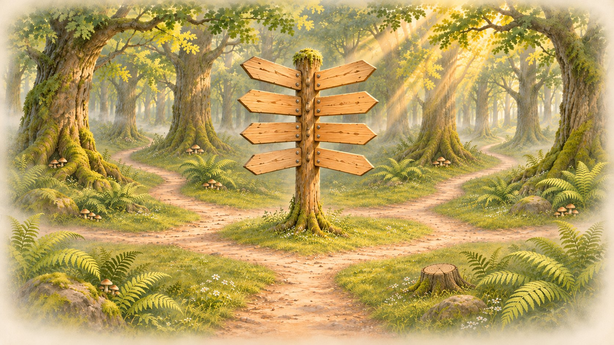

← RETURN TO THE MAP
The Forest
SOUND: ON

@IliasBased
MPower
Say Yes
@IliasBased
MPower
Say Yes
A path not yet named
A path not yet named
A path not yet named
A path not yet named
A path not yet named
Back to the map
~ follow a name ~